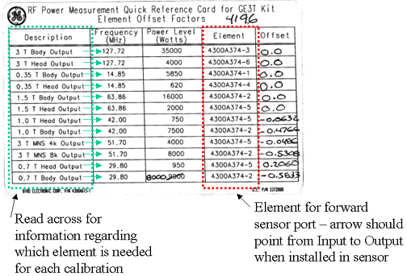
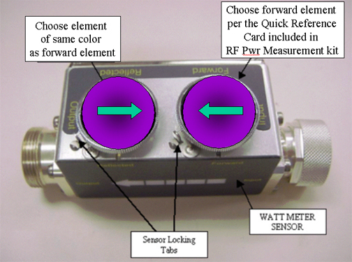
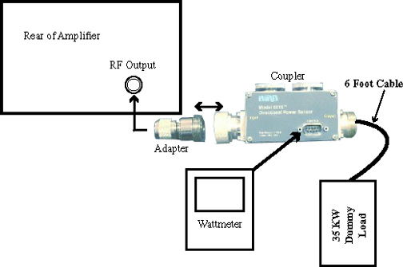

Operating Documentation
Direction 5670000, Rev# 1
Optima MR450w 1.5T Service Methods
Module Version 2.0, Version Date 6/18/09
Operating Documentation |
| Required Persons | Preliminary Reqs | Procedure | Finalization |
|---|---|---|---|
| 1 | Not Applicable | 30 mins | Not Applicable |
This procedure sets up the Power Measurement Kit in order to calibrate the CPC MNS RF Amplifier to 4000W (Maximum RF Power Calibration) or the AMT MNS RF Amplifier to 8000W for the Short Bore Systems and to 2500kW for Long Bore EXCITE systems. (Maximum RF Power Calibration) using the power Measurement Kit (Wattmeter).
| Last Update | 12/02/2004 |
| Item | Qty | Effectivity | Part# | Manufacturer | |
|---|---|---|---|---|---|
| Power Measurement Kit (Wattmeter Kit) | 1 | - | 2372868 | - | |
| Small Potentiometer Adjustment tool | 1 | - | - | - | |
| ||||
| FATAL ELECTRIC SHOCK HAZARD !! | ||||
| FATAL ELECTRICAL VOLTAGES THROUGH OUT THE MNS CABINET. | ||||
| TO PREVENT FATAL ELECTRIC SHOCK, MAKE SURE THER MNS RF AMPLIFIER IS DISABLED WHEN CONFIGURING THE CALIBRATION TOOLS. |
| ||||
| ELECTRICAL/RF BURN HAZARD. | ||||
| ELECTRICAL/RF BURN HAZARD. | ||||
| PREVENT POSSIBLE RF BURNS WHEN DISCONNECTING HELIAX CABLES FROM J3 OR J4 ON THE RF AMP BY VERIFYING THAT THE SYSTEM IS NOT MANUALLY PRESCANNING OR SCANNING. VERIFY THAT THE SCAN DESKTOP ICON DISPLAYS THE “IDLE” MESSAGE AND THE RF ENABLE SWITCH IS IN THE "OFF" POSITION. |
| ||||
| Property damage! Prevent coil and associated switch damage, by removing all phantoms and hardware (i.e., head coil, surface coil...) from the magnet bore. | ||||
| ||||
| Possible equipment damage. Do not operate the MNS RF Amplifier with an improper load connected to its output. Doing so may permanently damage the amplifier. | ||||
Setting up the RF Coupler. In this section, you will assemble the Wattmeter Sensor with the correct Sensor Elements. Choose the correct elements based on the Quick Reference Card provided with the RF Power Measurement Kit (See Illustration 1)
For CPC 4kW and AMT 2.5kW (3T94 upgrade to EXCITE systems) Cals) Insert the 50KW Element into the Forward Sensor Port. Make sure the arrow on the element points in the direction of the arrow (from Input to Output) on the Sensor. Lock Element in place using the locking tab on the sensor. (See Illustration 2). Place the 50kW element into the reflected port with the arrow pointing from the Output to the Input. (This is just a safety measure as the reflected port is not used).
For AMT 8kW Cal – Insert the 50kW Element into the Forward Sensor Port. Make sure the arrow on the element points in the direction of the arrow (from Input to Output) on the Sensor. Lock Element in place using the locking tab on the sensor (See Illustration 2). Place the 5kW element inot the reflected port with the arrow pointing from the Output to the Input. (This is just a safety measure as the reflected port is not used).
Illustration 1: RF Power Measurement Quick Reference Card

Illustration 2: RF Coupler Setup

Wattmeter and Dummy Load Setup. In this section, you will connect the Wattmeter and Dummy Load to the RF Output port of the MNS RF Amplifier.
Verify scanner is in “idle”, switch RF Enable to OFF, and disconnect the bias cable (J14 on the CPC and J11 on the AMT) from the back of the MNS RF Amplifier.
| NOTE: | Possible equipment damage. Do not turn connect/disconnect Wattmeter Sensor while Meter is ON. Always turn Meter OFF prior to plugging/unplugging Sensor. |
Disconnect the RF Output cable, (“RF Output”) from the back of the MNS RF Amplifier.
Connect the Input of the RF Wattmeter Sensor to the RF Output port at the back of the MNS RF Amplifier and then Connect the Output of the RF Coupler to the 35KW Dummy Load using the N Adapter in the kit. (See Illustration 3).
Illustration 3: Complete MNS Output Test Setup

Switch RF Enable to ON.
This section configures the Wattmeter to read Peak RF Power.
Press the ON button on the Wattmeter. (If coupler and sensor is not correctly attached to the amplifier you will get a “No Sensor” indication)
Select the up arrow button under Scale.
For CPC Amp Calibration, type: 5000 to set the range. For AMT Amp Calibration, type 50000 to set the range.
Select the <Enter> Button.
Check the setting, by selecting the arrow button under Scale once again.
Press <Enter> to exit this mode.
Check the setting, by selecting the arrow button under Scale once again.
Press <Enter> to exit this mode.
Select the arrow button under Fwd Units make sure the scale reads “W” (or “kW “on some watt meters). If the scale reads dBm, select the arrow button under Fwd Units again, to toggle the scale to read “W” (Watts or kW kiloWatts) on the TOP, Forward Power scale. Ignore the BOTTOM, reflected Power scale value. It is not used during Maximum Power Calibration.
Select the <Shift> Button.
Select the arrow button under Setup.
Verify it reads “43”. If not, type the number “43” followed by the enter button. (Illustration 4 shows what should be displayed at this time).
| NOTE: | This action displays the Sensor Type configured in the Wattmeter. This procedure uses Sensor” Type 43”, which is optimized for peak power measurement. |
Illustration 4: Wattmeter Display Set To Read Peak Power Sensor

Select the arrow button under Type, change unit of measurement to Peak. (Illustration 6 shows what should be displayed at this time).
The meter is now configured to read RF Peak Power for the 4KW MNS Maximum Output calibration.
Perform MNS Amplifier calibration.
Verify scanner is in “idle”, turn off RF Enable.
Disconnect the RF Watt Sensor from the RF Output Connection.
Connect the Original Output Cable to the MNS RF Amplifier, and tighten the connector.